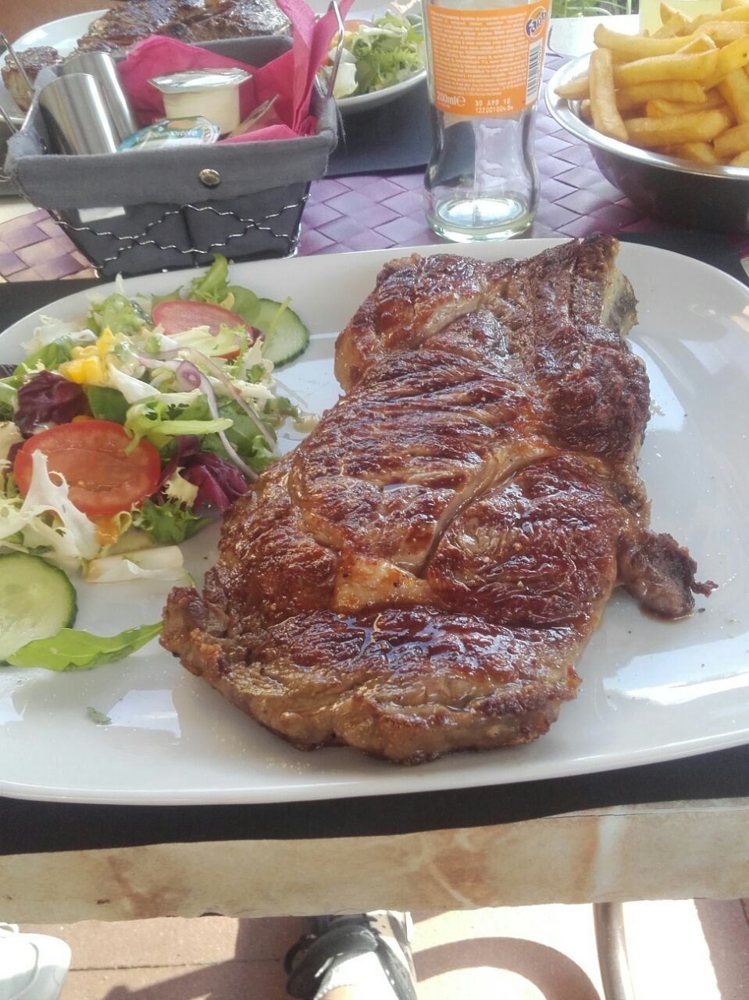
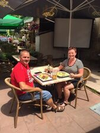
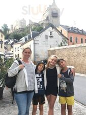
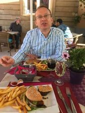
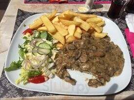
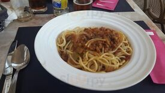

Brasserie de village à Larochette. Cuisine luxembourgeoise généreuse et spécialités portugaises, servies en terrasse face à la place et aux ruines du château.

La famille qui tient la maison parle français et portugais — et cela se goûte. D'un côté les classiques du pays ; de l'autre, la morue et les douceurs du Portugal.
Une carte de brasserie, simple et copieuse — du café du matin au dîner. Le midi, le plat du jour change au fil de la semaine.
Notre suggestion du midi, plus douce que la carte. Annoncée à l'ardoise chaque jour.
à partir de 12 €*Bolognese, carbonara, lasagne maison.
14 €*Salade, frites maison, sauce au choix.
23 €*Burger maison servi avec frites.
16 €*Salade César et compositions du marché.
13 €*Pastéis de nata, gâteau aux noix, glaces.
4 €*Cafés, bières, vins, apéritifs & jus.
—* Plats et prix reconstitués à titre indicatif — à confirmer avec l'établissement.
Ici la journée ne s'arrête pas entre deux services. On passe pour un café, on reste pour le plat du jour, on revient pour l'apéro.
Un expresso au comptoir ou en terrasse, avant la balade dans le Mullerthal.
La suggestion du midi, généreuse et à petit prix, pour les habitués comme pour les randonneurs.
Une bière, un pastel de nata et la vie du village qui passe sur la place.
Le grill, la morue, et régulièrement des soirées à thème. à confirmer
Un café-brasserie de village, familial et sans façon, au cœur de la Petite Suisse luxembourgeoise.





En plein centre de Larochette, sur la place du marché, face au château. Parking à proximité.